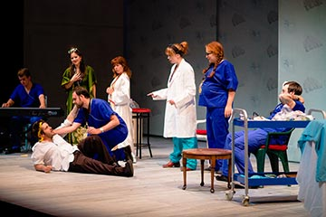
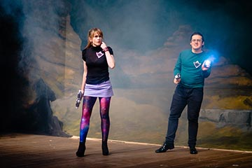
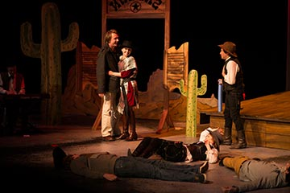
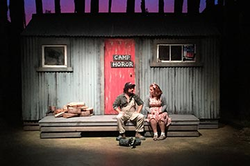

Soapland Street
Hospitals are positively filled with drama. And drama only leads to revelations, eyepatches, cliffhangers and more twists than a 6-foot licorice rope: stakes were high in our serialised comedic tribute to a certain much-loved New Zealand medical drama that shall remain anonymous. So gripping that one lady from Hamilton saw one episode while in town and then just HAD TO fly down especially to see the big finale!

Space Patrol 5
In the far reaches of space, the brave crew of Space Patrol 5 continue their important mission of peaceful exploration, science, diplomacy, and straight-up fist-fighting any aliens that make the mistake of rubbing them up the wrong way. This homage to classic science fiction was so on point that you could practically smell the forehead prosthetic glue and polystyrene boulders, and proved a smash hit when performed at the New Zealand Improv Festival.
“Such care and love has been taken with this show, it is a delight to watch… the strongest genre piece of the festival.”
TheatreView
Band of Rock
An all-access backstage pass, Band of Rock pulled back the curtain on the rock n’ roll lifestyle of drugs, gigs, personality clashes, the road, hotel-room-trashing, drugs, glamour, celebrity causes, Satan worship, groupies, the creative process, inspiration, drugs, songwriting and drugs as The Biggest Band in the World hit the stage to bust out some of their chart-topping (improvised) hits, even going so far as to play their own instruments. Rock n’ roll, man.

Djesters Unchained
A lawless frontier town is in need of a hero. But there’s hope – the Jesters have signed up some random audience member as the new sheriff! He / she and his / her upbeat /surly / bemused attitude turned out to be just what Dry Gulch needed (convenient!). Dukes were put up and skies were reached for in this Western epic that took our love of audience participation to a new level.
Scriptless: The Musical
All singing, all dancing (well, lots of singing, some dancing) – Scriptless: The Musical was our own unique take on that classic musical story of boy meets girl, boy is a zoo architect, they fall in love, but girl is also concerned about the Queen’s upcoming visit, and the African jaguars are out of control… A love-letter to Broadway that featured an all new story and songs every night (beat that, Broadway).
A Painful Election
Scared Scriptless saw a sudden upsurge in baby-kissing as four candidates from across the spectrum made their bid to become our great nation’s next leader. But what skeletons (and little-used exercise equipment) were they hiding in their closets? It was up to the audience to choose carefully from amongst them, assisted by our in-house smartphone polling and live feedback graphics in the theatre. Ooo, fancy.

Tales From Camp Horror
Welcome to Camp Horror, kids. Here, come close, and sit around the campfire with me. Don’t worry, I won’t bite – as you can see, I’m missing all my teeth – but I will tell you a terrifying tale or three, each more filled with dread than the last. Perfect for the month of Halloween, our horror anthology kept audiences laughing, but also snuck up on them with some scares as well, and OH GOD IT’S BEHIND YOU RIGHT NOW
The Hungry Games
In the dystopian future, the oppressed people of the Districts must send their children to fight in The Hungry Games, a battle to the death where only the strongest (or most handy with an egg beater) might hope to survive… Meanwhile, in the dystopian present, the Court Jesters offer a Tribute of their own to a certain mega-popular book and film franchise that cannot be named for copyright reasons.